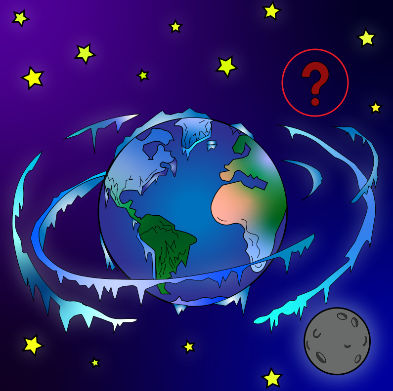

EXPLICACIÓN
¿QUE PASARIA?
Durante unos 8 minutos y 20 segundos no notaríamos ningún cambio, porque ese es el tiempo que tarda la
luz solar en llegar a la Tierra. Después, el planeta quedaría sin luz ni calor y dejaría de orbitar alrededor
del Sol. La temperatura disminuiría progresivamente y la fotosíntesis se detendría, afectando a las plantas,
al oxígeno y a las cadenas alimentarias. Con el tiempo, gran parte del agua superficial se congelaría.

Sin Sol